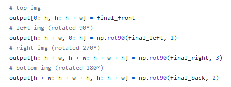

Implementation

Firstly, we needed to make sure that the library we use was the right one in terms of capabilities. Our expectations were to find a library that can rotate, flip and merge 4 video streams. Therefore, we started to do little experiments with OpenCV. For example, we created a Python script that flips a video stream. Then we wrote other scripts for rotation and merging. The last one also included resizing since 2 videos cannot be merged if they do not have the same size. During these processes we learned more about how videos actually work, how to create frames from scratch and how to modify them using the NumPy library.
In the last weeks of term one we wrote the scripts for flips, rotations and merges. Another requirement at that time was to use background subtraction in order to show only the target subject. Through research, we found that it can be done by creating a foreground mask which detects the background using algorithms such as KNN, MOG and MOG2.
During experiments, we compared the results of using OpenCV methods based on KNN, MOG and MOG2. Unfortunately, none of them yielded the desired result, but the closest to what we needed was MOG2. We found out that what we tried was designed for targets that are further from the camera. We needed some algorithm that can help us get the whole person out of the background, by selecting it. The problem is that what we used worked by comparing frames and seeing which pixels moved. Since our target (e.g., a person video-conferencing) takes around 60% of the frame, there were pixels that did not move enough to be detected, such as the ones on the T-shirt or hair. Consequently, we could not use any of OpenCV's background subtractors.
As a result, the video source could be successfully rendered, with the possibility to be output in three different ways. Firstly, it can be turned into a .avi video file on the local machine running the script. Second, it can be projected as a video on a new window. Finally, the rendered visuals can be encapsulated as a virtual webcam source to be recognized in OBS Studio where it can be redirected to video conferencing applications. Consequently, the rendered visuals can be projected onto a holographic pyramid, where it will form a singular 3-dimensional entity.
Hence, we looked up other solutions. we bumped into a paper that suggested another way of subtracting the background, using HSV (Hue, Saturation, Value) color space. The method was based on using Hue to detect the background since it remains constant in light changes. Also, the background has lower Saturation and Value.
In the end we found 2 other options: using PyTorch to achieve background separation by semantic segmentation or using a geometric multigrid that uses statistical methods and a per pixel Bayesian segmentation algorithm. We ran out of time and we finally ended up assuming a green screen as our clients communicated to us that this was not an essential requirement.
After testing the capabilities of OpenCV library, we decided to use it to create the pyramid view. Next, we needed to somehow use the result. Firstly, we thought about creating an easy Python app with Tkinter to display the video, but this solution has no further appliances. The TA pointed us in the right direction by telling us that maybe we can use other apps that can capture the video streams. Therefore, we started to search for solutions and found out about Open Broadcaster Software (OBS). After familiarizing ourselves with OBS, we started to learn about scenes and sources. Firstly, we downloaded StreamLabs, the Amazon product that was created based on the classic OBS. We ended up using the classic version since it had more potential for future development. Using OBS also has further appliances such as displaying the video in a video conferencing application (Zoom, Microsoft Teams).
In the last weeks, we developed the final program that sends the pyramid view stream to a virtual camera that can be captured by OBS Studio. Therefore, our team found a library called pyvirtualcam and we used it to display the view in OBS. The code that we designed has 3 options: save the rendered video, send it to the virtual camera and display it in a separate window. The implementation is based on manipulating 3-dimensional NumPy arrays that represent frames, in order to get the desired result.
